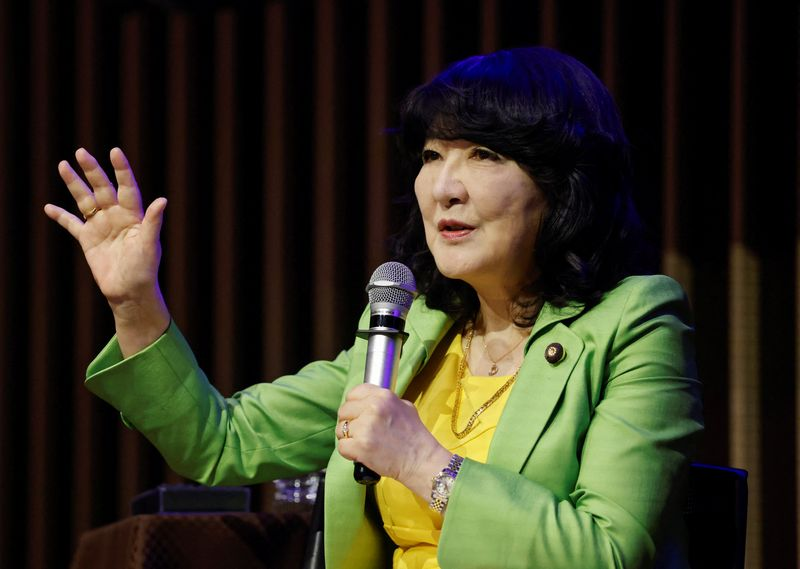

01
【世界のニュース７選】米イラン衝突再燃 米軍が先制攻撃
公開日時：2026年8月31日 17:00 JST
あなたに関係ありそうな理由
国際情勢を読む際に、当事者の主張、確認済みの事実、まだ真偽が固まらない情報を切り分ける練習になるためです。
概要
この記事は、The Economistの「The world in brief」として、8月31日時点の国際ニュースを七つに分けて伝える。最初の焦点は、米軍がホルムズ海峡近くのイラン・ララク島にあるロケット発射装置二基を攻撃した件だ。米国によるイラン攻撃は7月下旬以降で初めてとされ、米政府高官は、イラン軍が同海峡への機雷敷設を準備していたと説明した。一方、トランプ大統領が主要原油輸出拠点のカーグ島が「粉々に吹き飛ばされている」と述べた点は、記事内でも真偽未確認と明記される。イランはヨルダンの米軍目標にミサイルを発射して報復した。ネパールでは鉄砲水で被災した水力発電施設のトンネルに閉じ込められた可能性がある作業員の救助を急ぎ、中国とインドの専門チームも支援している。死者は約800人、行方不明者は数千人とされる。パラオで開く太平洋諸島フォーラムでは、18の国・地域の首脳のうち5人が欠席する見通しで、中国の地域への影響が論点になっている。経済面では、中国の8月製造業PMIが49.8と2カ月続けて50を下回った一方、日本の7月鉱工業生産は前月比0.1％増で、市場予想の減少に反してプラスになった。キプロス沖のフェリー転覆、ザンビア野党指導者の逮捕、オンタリオ湖表記を「アメリカ湖」に変えたグーグルマップも取り上げる。表示コメントでは、湖の名称変更や人工生成動画を使った政治発信を例に、指導者の発言と演出を冷静に検証すべきだという問題意識が示された。短い国際ニュースほど、発生事実、当事者の発言、裏付けの有無を混ぜずに追うことが重要だ。キプロス沖では267人が乗ったフェリーが浸水後に転覆し、237人が救助された一方、少なくとも7人が死亡し23人の捜索が続く。ザンビアでは最大野党の指導者が国家反逆罪で起訴され、選挙結果をめぐる主張と捜査が重なった。記事の最後は、THC入り飲料の年間売上が2020年代末までに44億ドルに達し得るという数字を置き、規制や健康影響を含めた追跡を促している。単発の見出しを追うだけでなく、各国の制度や地域の前提も確認したい。情報量の多い一日でも、数字の大きさだけでなく、いつ、誰が、どの根拠で語ったのかを確かめる視点が要る。
仕事や会話で使える一言
「国際ニュースは、起きた事実と当事者の主張、未確認情報を分けて追うと判断を急がずに済みます。」
NewsPicks原文を読む
02
核のごみ最終処分場選定 経産省、茨城・常陸大宮に文献調査打診
公開日時：2026年8月31日 15:12 JST
あなたに関係ありそうな理由
大きなインフラ・環境課題では、候補地の浮上と最終決定を混同せず、調査段階、地域への影響、意思決定の順番を読む必要があるためです。
概要
この記事は、原発で生じる高レベル放射性廃棄物、いわゆる核のごみの最終処分場選定を巡り、経済産業省が茨城県常陸大宮市へ第1段階の文献調査を申し入れたことを伝える。文献調査が実施されれば全国で5例目となり、政府が主体的に申し入れるのは東京都小笠原村に続く2例目だ。重要なのは、今回の申し入れが最終処分場の決定ではなく、地質や地震の記録を文献で調べる最初の工程だという点である。法定の手続きは、文献で記録を確認する文献調査、地下を掘って岩石や地下水を調べる概要調査、地下施設を設置して詳しく調べる精密調査の三段階で進む。記事によれば、文献調査は約2年を想定し、応じた自治体には最大20億円が交付される。これまでには北海道の寿都町と神恵内村、佐賀県玄海町、南鳥島で文献調査が行われている。常陸大宮市は茨城県北西部で、東京都から直線距離約110キロ、人口は約3万5700人だ。政府が2017年に示した科学的特性マップでは、市の全域を処分地として好ましい特性が確認できる可能性が相対的に高い地域と評価し、南東部については輸送面でも好ましいとした。表示コメントには、人口減少や地域の疲弊との関係を注視する意見、補助金だけを目的にせず住民と関係省庁の理解を積み重ねるべきだという意見があった。候補地のニュースを読むときは、調査の目的、次段階へ進む条件、地域が負う負担と得る支援を分けて確かめたい。記事の写真は、ガラスで固めた高レベル放射性廃棄物が青森県六ケ所村の日本原燃施設で保管されていることを示す。文献調査に応じても、その後の概要調査や精密調査へ自動的に進むわけではない。地質、輸送、地域合意を各段階で確認する手順であり、地図の評価は立地決定の結論そのものではない。今回の打診を、国のエネルギー政策と一自治体の選択が交わる地点として捉え、公開される資料と住民への説明を追う必要がある。寿都町、神恵内村、玄海町、南鳥島での前例と比べ、常陸大宮で何が同じで何が異なるかも次の論点になる。調査が地域に与える影響、意思決定の主体、次に公開される根拠資料を時間をかけて見守る必要がある。その比較が不可欠だ。判断を急がないことが必要だ。
仕事や会話で使える一言
「候補地が出た段階では、結論より先に、どの調査段階で何が決まるのかを確認したいですね。」
NewsPicks原文を読む
03
消費減税で悪影響の外食・農家支援 全て金額なしの「事項要求」
公開日時：2026年8月31日 17:20 JST
あなたに関係ありそうな理由
減税策は税率だけでなく、仕入れ、業種間の差、自治体収入、財源まで連動するため、制度変更の実務的な影響を考える材料になるためです。
概要
この記事は、8月31日に締め切られた2027年度予算の概算要求に、27年4月開始予定の消費減税への対応が盛り込まれたことを伝える。食料品の税率を下げる場合、小規模農家、外食産業、地方自治体に別々の影響が出るが、支援策はすべて金額を置かない「事項要求」となった。具体額は年末に向けた予算編成で詰める方針だ。農林水産省は、減税で経営への打撃が懸念される小規模農家と外食産業への対応を要求した。売上高1000万円以下の小規模農家は消費税の納税を免除されており、国内農家の8割以上を占める。販売先から受け取る消費税が8％から1％へ減る一方、農機具や肥料など仕入れ時に払う10％は据え置かれるため、手取りが減る可能性がある。食料品の減税後も10％が適用され続ける外食産業は、税率差が大きくなり、売り上げが減る懸念がある。政府は農家への現金給付、外食産業へのテークアウト導入支援を検討する。総務省は地方自治体の減収への措置を要求し、記事は全国で計1.7兆円の減収見込みに触れる。国は特例交付金による穴埋めを調整している。減税に必要な年5兆円規模の財源も年末の検討対象だ。表示コメントでは、売上1000万円以下の農家が多い背景、農業分野の負担試算、外食店の仕入れ税額控除やテークアウトとの税率差を巡って具体的な議論が出た。制度の是非を考えるときは、家計の税率だけでなく、誰の仕入れ負担が残り、支援額と財源がいつ確定するかまで確認する必要がある。支援を受ける側だけでなく、制度を運用する自治体の事務、レジや会計の対応、消費者の購買行動も変わる。記事で金額が確定していないのは、影響を受ける業種ごとの対策と、減税本体の財源を同時に詰める必要があるためだ。現金給付、交付金、テークアウト支援がどの条件でどこまで対象になるのかは、年末の予算編成で確認するべき論点になる。コメントにあるように、税率の差が価格にどう転嫁されるか、原材料高や人件費と重なったときに店や農家の収支がどう変わるかは、一般論で決められない。税率変更が現場で実施されるまでの準備期間、申請手続き、価格表示の負担にも目を向けたい。これも重要だ。影響の確認を急げない。
仕事や会話で使える一言
「税率を下げる議論では、売る側の受取額と仕入れ時の負担がどうずれるかも見ないといけません。」
NewsPicks原文を読む
04
財務省・金融庁、個人向け国債の税優遇盛り込む＝27年度税制改正要望
公開日時：2026年8月31日 13:06 JST

あなたに関係ありそうな理由
家計の資産形成と国債の買い手づくりを同時に進めようとする政策であり、優遇策の目的と公平性を分けて考える材料になるためです。
概要
この記事は、財務省と金融庁が2027年度税制改正要望に個人向け国債の税優遇を盛り込んだことを報じる。狙いは、国債を保有する層を多様化し、個人投資家の資産形成も促すことだ。ただし、どの税をどれだけ減らすかという具体像は書かない「事項要望」にとどまり、年末へ向けて議論が本格化する。個人向け国債については、相続税の減免や少額投資非課税制度（NISA）の対象に加える案が与野党から出ている一方、税負担の公平性から慎重な見方もある。政府は骨太の方針で、個人向け国債の魅力を高めて国内投資家層を広げる方針を掲げた。片山さつき財務・金融担当相は、商品性の見直しと新商品の設計を急いでいると説明しつつ、「貯蓄から投資へ」という政策目標との整合性や公平性など、複数の論点を丁寧に議論したいと述べた。ここでは、個人に優遇を与えることと、国の安定的な資金調達を支えることが重なる。表示コメントでは、3月末の個人の現金・預金1126兆円の1％が国債に移るだけで10兆円超の買い手になり得るという試算が紹介され、日銀の量的正常化で民間の買い手の重要性が増すという見方が出た。5年物利回りが2％付近だという指摘や、相続税を軽くするなら資産配分が変わる可能性も論点になった。一方で、税優遇を実質的な利回り上乗せと見る意見、公平性や投資先の優先順位を問う意見もある。制度の検討では、商品性、家計への効果、税収への影響、国債市場の安定を一つの数字にまとめずに見たい。また、個人向け国債をNISAに入れるのか、相続時の優遇を設けるのかで、対象者も財政コストも変わる。国債の買い手を増やす狙いと、リスク資産への投資を促すNISAの位置づけは必ずしも同じではない。優遇策の発表時には、対象額、保有期間、既存保有者への扱い、他の資産との税制差まで比較したい。コメントのように高齢者の資産選択と若年層の資産形成では、求める安全性も時間軸も異なる。税優遇が実現した場合の国債費と税収の変化も、制度の持続性を考える材料になる。政策目的が家計の支援か国の調達かによって、評価に使う基準も変わる。制度の狙いを明示することが欠かせない点も重要だ。対象の範囲も確認したい。
仕事や会話で使える一言
「税優遇は利回りだけでなく、誰に資産を移してほしい制度なのかまで見ると論点が整理できます。」
NewsPicks原文を読む
05
円の動き「かなり抑制されている」、無秩序ではない＝米財務長官
公開日時：2026年8月31日 08:16 JST
あなたに関係ありそうな理由
為替の発言を読むときに、介入の有無、金融政策への期待、財政政策への評価を一つのメッセージとして混同しないためです。
概要
この記事は、米国のベセント財務長官がロイターのインタビューで、最近の円相場の動きは無秩序ではないとの認識を示したことを伝える。円相場が依然として無秩序かと問われ、「かなり抑制されていると思う」と答えた。円安を是正するため日銀が追加利上げを検討すべきかという質問には、植田総裁が高市首相の支持を得て金融政策で正しい判断を下すことを期待すると述べたが、何をすべきか指示するつもりはないともした。その上で、リフレ政策であったアベノミクスはおそらく終わりを迎えたと考える、と付け加えた。ベセント氏は8月31日に米ノースカロライナ州アッシュビルで開幕するG20財務相・中央銀行総裁会議の合間に、植田総裁と会談する予定だという。植田総裁を15年来の付き合いで、優れた経済学者かつ市場への洞察力が過小評価されている人物だと評した。記事によれば、同氏はこれまでインフレや望ましくない円安への対応として日銀に利上げを繰り返し求めていた。財政政策については、日本は一歩引いてアベノミクスの成功を享受し、流れに任せるべきだとも語った。表示コメントでは、国際的な為替介入は無秩序な市場の動きへの対応という理解があるため、「無秩序ではない」という発言を介入の根拠が乏しいという意味で読む意見があった。協調介入前より発言のトーンは柔らかいが、円安への問題意識が消えたわけではない、日銀の利上げだけで円高効果が続くかは別問題だという見方も出ている。発言を読む際は、為替介入、金利、財政を同じ結論に短絡させないことが大切だ。記事でベセント氏は、高市政権下で労働市場の規制緩和が進み、政府の介入が小さい株主志向の経済になるとの見方にも触れている。これはインタビューでの評価であって、政策効果を確定させるものではない。G20での会談後に何が共同で示されるか、実際の金利判断と市場の反応が発言通りに動くかを続報で確認する必要がある。コメントが示すように、投機的な円売りの巻き戻し、日米金利差、政策の独立性は別々に見るべき論点だ。市場は言葉だけでなく、会談の内容とその後の政策対応を待って判断することになる。報道の表現だけで相場の方向を断定しない姿勢が要る。
仕事や会話で使える一言
「為替の発言は、介入への評価と金利政策への期待を分けて読むと、過剰に反応しにくくなります。」
NewsPicks原文を読む